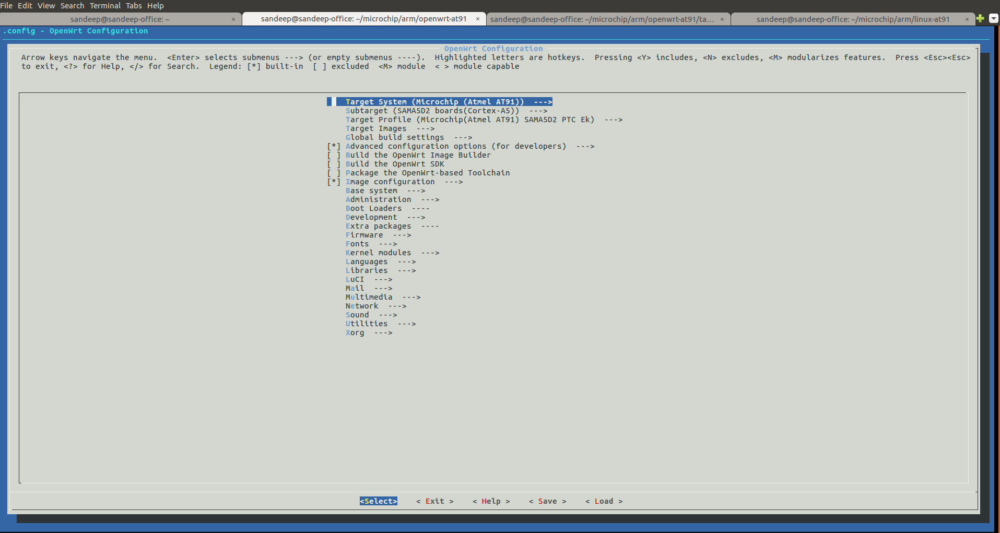

OpenWrt
Introduction
OpenWrt is an open source project for embedded operating system based on Linux, primarily used on embedded devices to route network traffic. All components have been optimized to be small enough to fit into the limited storage and memory available in home routers. OpenWrt is configured using a command-line interface (ash shell), or a web interface (LuCI). OpenWrt can run on various types of devices, including CPE routers, residential gateways, smartphones, pocket computers and laptops etc. Currently the OpenWrt can build- AT91Bootstrap
- u-boot-at91
- linux-at91
- A cross-compiler optimized for at91 SoC
- Root filesystems of different types
- Bootable SD card Image
Related Links
How to build OpenWrt for AT91
Prerequisites
Host build system should be a Linux system with necessary software$ sudo apt-get install libssl1.0-devlibssl provided by Ubuntu 20.04 doesn't fit with kernel necessities. The workaround for this is to do the following before installing
libssl1.0-dev:Edit
/etc/apt/sources.list file and add the following line at the end:
deb http://security.ubuntu.com/ubuntu bionic-security mainUpdate:
sudo apt-get update
yum install with Fedora or apt-get install with Ubuntu or Debian. These commands may require root privileges or being in a correct sudoers group.
Get sources
You can easily download OpenWrt sources from our OpenWrt git$ git clone https://github.com/linux4sam/openwrt-at91.git Cloning into 'openwrt-at91'... remote: Enumerating objects: 44, done. remote: Counting objects: 100% (44/44), done. remote: Compressing objects: 100% (37/37), done. remote: Total 420102 (delta 17), reused 13 (delta 7), pack-reused 420058 Receiving objects: 100% (420102/420102), 148.16 MiB | 190.00 KiB/s, done. Resolving deltas: 100% (285014/285014), done. $ cd openwrt-at91 $The source code has been taken from the master branch which is pointing on the latest version of OpenWrt. If you want to use a specific release, you can list them and use one of them by doing this:
$ git checkout openwrt-19.07.2-at91 -b openwrt-19.07.2-at91,To benefit the latest enhancements for Microchip products, you are advised to use the openwrt-19.07.2-at91 branch.
Build OpenWrt images
The OpenWrt image contains the following components:- BOOT.BIN (AT91Bootstrap)
- U-boot.bin (U-Boot)
- zImage (kernel image)
- at91 Device tree blob
- Root filesystems of different types
- Bootable SD card Image
$ ./scripts/feeds update -a $ ./scripts/feeds install -aNOTE: It is possible to create out of tree builds by setting the TOPDIR environment variable and creating the appropriate directory structure (see this
$ cp configs/sama5d2_xplained_defconfig .config $ make defconfigEverything is now ready for building the image(s), which is done with one single command:
$ makeAfter a successful build, the freshly built images can be found in the newly created
at91 directory in <openwrt-at91>/bin/target/ directory. The compiled files are additionally classified by the target platform, so e.g. a firmware built for an at91 sama5d2 xplained device will be in <openwrt-at91>/bin/target/at91/sama5-glibc directory
$ ls bin/targets/at91/sama5-glibc/ at91bootstrap-sama5d2_xplaineddf_qspi_uboot at91bootstrap-sama5d2_xplaineddf_uboot at91bootstrap-sama5d2_xplainedsd_uboot at91dtoverlay-sama5d2_xplained config.buildinfo feeds.buildinfo openwrt-19.07.2-linux4sam-2020.10-at91-sama5-at91-sama5d2_xplained.dtb openwrt-19.07.2-linux4sam-2020.10-at91-sama5-at91-sama5d2_xplained-ext4-root.ubi openwrt-19.07.2-linux4sam-2020.10-at91-sama5-at91-sama5d2_xplained-ext4-sdcard.img.gz openwrt-19.07.2-linux4sam-2020.10-at91-sama5-at91-sama5d2_xplained-ext4-zImage openwrt-19.07.2-linux4sam-2020.10-at91-sama5-at91-sama5d2_xplained-ubifs-root.ubi openwrt-19.07.2-linux4sam-2020.10-at91-sama5-at91-sama5d2_xplained-ubifs-zImage openwrt-19.07.2-linux4sam-2020.10-at91-sama5-at91-sama5d2_xplained-uImage openwrt-19.07.2-linux4sam-2020.10-at91-sama5-device-at91-sama5d2-xplained.manifest openwrt-19.07.2-linux4sam-2020.10-at91-sama5-device-at91-sama5d2-xplained-rootfs.tar.gz packages sama5d2_xplained.itb sha256sums uboot.env u-boot-sama5d2_xplained_mmc u-boot-sama5d2_xplained_spiflash version.buildinfoTo write the compressed image (
*.img.gz) on the SD card, follow steps mentioned in Create a SD card with the demoCross toolchain
While creating the OpenWrt images, OpenWrt will build a cross toolchain (or will download or use one present on your machine). You can find it understaging_dir/toolchain-arm_cortex-a5_gcc-8.4.0_glibc_eabi/bin
$ ls staging_dir/toolchain-arm_cortex-a5_gcc-8.4.0_glibc_eabi/bin/ arm-openwrt-linux-addr2line arm-openwrt-linux-gcov-tool arm-openwrt-linux-gnueabi-gcov arm-openwrt-linux-gprof iconv arm-openwrt-linux-ar arm-openwrt-linux-gdb arm-openwrt-linux-gnueabi-gcov-dump arm-openwrt-linux-ld ldd arm-openwrt-linux-as arm-openwrt-linux-gnueabi-addr2line arm-openwrt-linux-gnueabi-gcov-tool arm-openwrt-linux-ld.bfd locale arm-openwrt-linux-c++ arm-openwrt-linux-gnueabi-ar arm-openwrt-linux-gnueabi-gdb arm-openwrt-linux-nm localedef arm-openwrt-linux-c++filt arm-openwrt-linux-gnueabi-as arm-openwrt-linux-gnueabi-gprof arm-openwrt-linux-objcopy makedb arm-openwrt-linux-cpp arm-openwrt-linux-gnueabi-c++ arm-openwrt-linux-gnueabi-ld arm-openwrt-linux-objdump mtrace arm-openwrt-linux-elfedit arm-openwrt-linux-gnueabi-c++filt arm-openwrt-linux-gnueabi-ld.bfd arm-openwrt-linux-ranlib pcprofiledump arm-openwrt-linux-g++ arm-openwrt-linux-gnueabi-cpp arm-openwrt-linux-gnueabi-nm arm-openwrt-linux-readelf pldd arm-openwrt-linux-gcc arm-openwrt-linux-gnueabi-elfedit arm-openwrt-linux-gnueabi-objcopy arm-openwrt-linux-size readelf arm-openwrt-linux-gcc-8.4.0 arm-openwrt-linux-gnueabi-g++ arm-openwrt-linux-gnueabi-objdump arm-openwrt-linux-strings sotruss arm-openwrt-linux-gcc-ar arm-openwrt-linux-gnueabi-gcc arm-openwrt-linux-gnueabi-ranlib arm-openwrt-linux-strip sprof arm-openwrt-linux-gcc-nm arm-openwrt-linux-gnueabi-gcc-8.4.0 arm-openwrt-linux-gnueabi-readelf catchsegv tzselect arm-openwrt-linux-gcc-ranlib arm-openwrt-linux-gnueabi-gcc-ar arm-openwrt-linux-gnueabi-size gencat xtrace arm-openwrt-linux-gcov arm-openwrt-linux-gnueabi-gcc-nm arm-openwrt-linux-gnueabi-strings getconf arm-openwrt-linux-gcov-dump arm-openwrt-linux-gnueabi-gcc-ranlib arm-openwrt-linux-gnueabi-strip getent
The build system configuration interface
The build system configuration interface handles the selection of the target platform, packages to be compiled, packages to be included in the firmware file, some kernel options, etc. Start the build system configuration interface by writing the following command:make menuconfig
Customizing Linux Kernel configuration
All the explanations are available in the OpenWrt developer guide under kernel configurationUsing an OpenWrt system
OpenWrt has the following ways to configure stuff:- There is “UCI” (Unified Configuration Interface)
 to store and manipulate all its configuration. This is an OpenWrt-own format and standard for config files and command line utilities to configure OpenWrt-related stuff)
to store and manipulate all its configuration. This is an OpenWrt-own format and standard for config files and command line utilities to configure OpenWrt-related stuff)
- There is “LuCi” - a web GUI interface for UCI, by default usually listening at http://192.168.1.1. LuCi is based on LUA and its a OpenWrt own standard as well. You can also enable https for LuCi access. Not all options may be available in LuCi and LuCi requires about 1MB of flash space.
- There are several classic Linux config files also used in on OpenWrt devices. These files use the same format and config options as in other Linux distributions.
- Optional installable packages sometimes integrate into the UCI config model and may also provide a LuCi config extension, but many extension packages also bring their own config files* Root File System's
Recent FAQ
- OpenWrt
-
• Build Issue Open Wrt Ubuntu 2004: OpenWrt build error on Ubuntu 20.04. (Sama5d2-icp, Sam9x60EK, Sama5d27WLSom1EK, Sama5d27Som1EK, Sama5d2Xplained)


| I |
Attachment | Action | Size | Date | Who | Comment |
|---|---|---|---|---|---|---|
| |
Openwrt-LuCi.png | manage | 77.8 K | 2018-03-29 - 19:16 | SandeepSheriker | Openwrt-Luci |
| |
Openwrt-Menuconfig.png | manage | 109.9 K | 2018-03-29 - 19:14 | SandeepSheriker | Openwrt-Menuconfig |
r16 - 17 Jun 2021 - 09:11:31 - ClaudiuBeznea

{kind=link}
{kind=link}
{kind=link}
{kind=link}
Copyright © by the contributing authors. All material on this collaboration platform is the property of the contributing authors.
Linux® is the registered trademark of Linus Torvalds in the U.S. and other countries.
Microchip® and others, are registered trademarks or trademarks of Microchip Technology Inc. and its subsidiaries. 
Arm® and others are registered trademarks or trademarks of Arm Limited (or its affiliates). Other terms and product names may be trademarks of others.
Ideas, requests, contributions ? Connect to LinksToCommunities page.